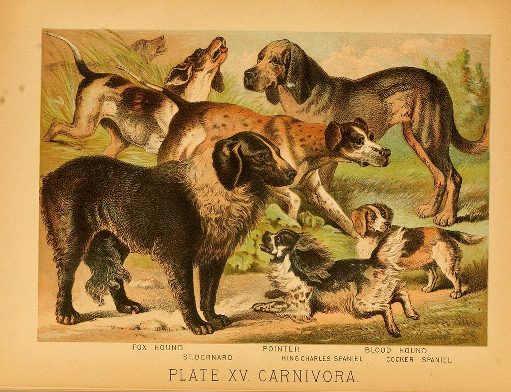
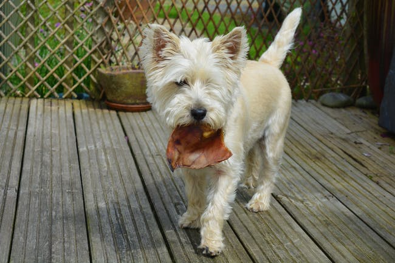
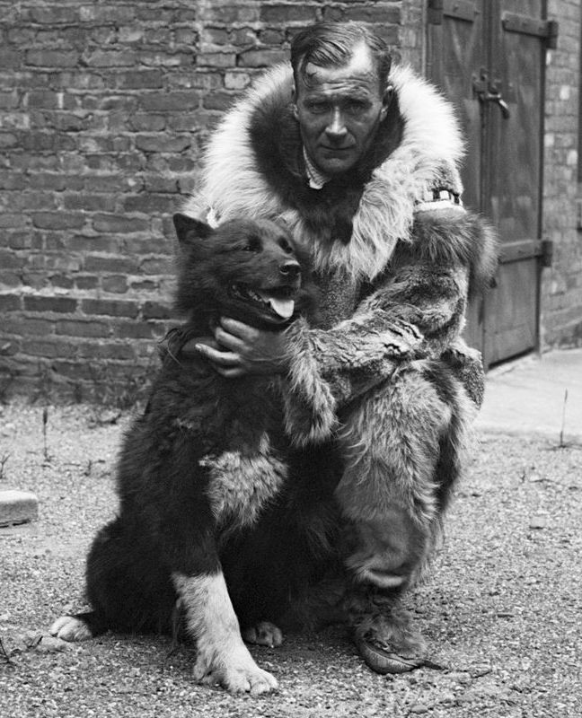
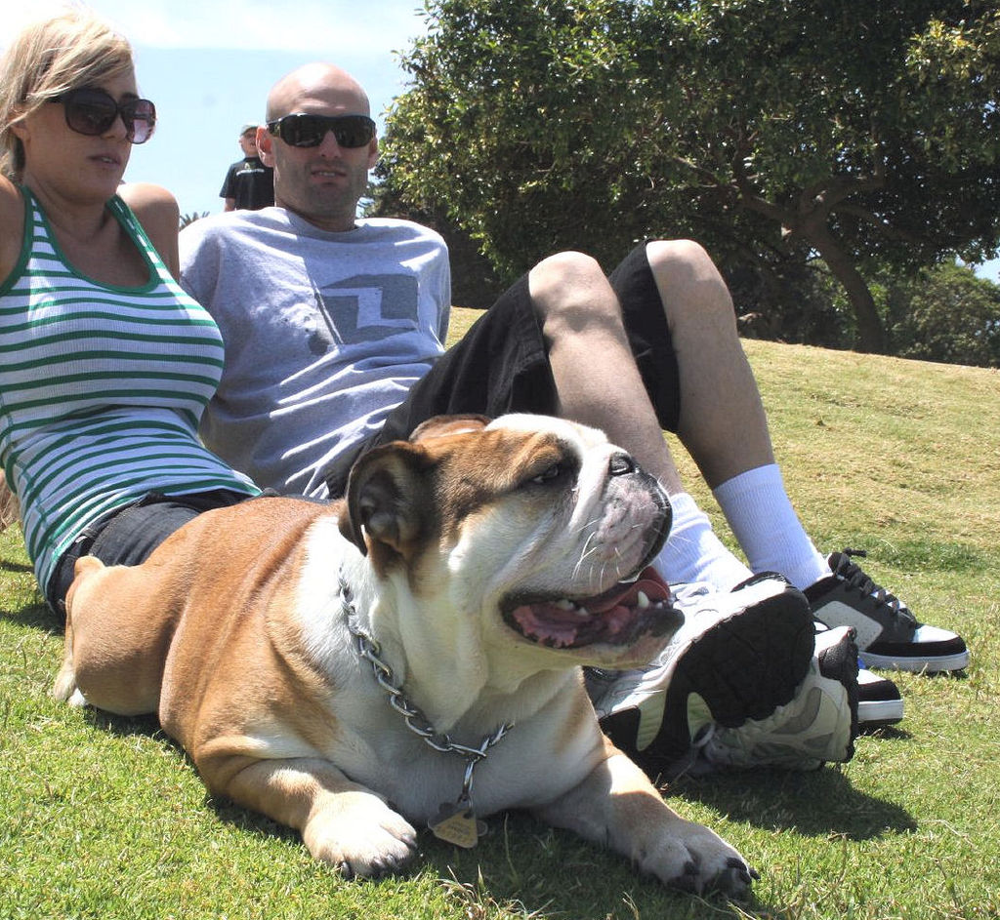
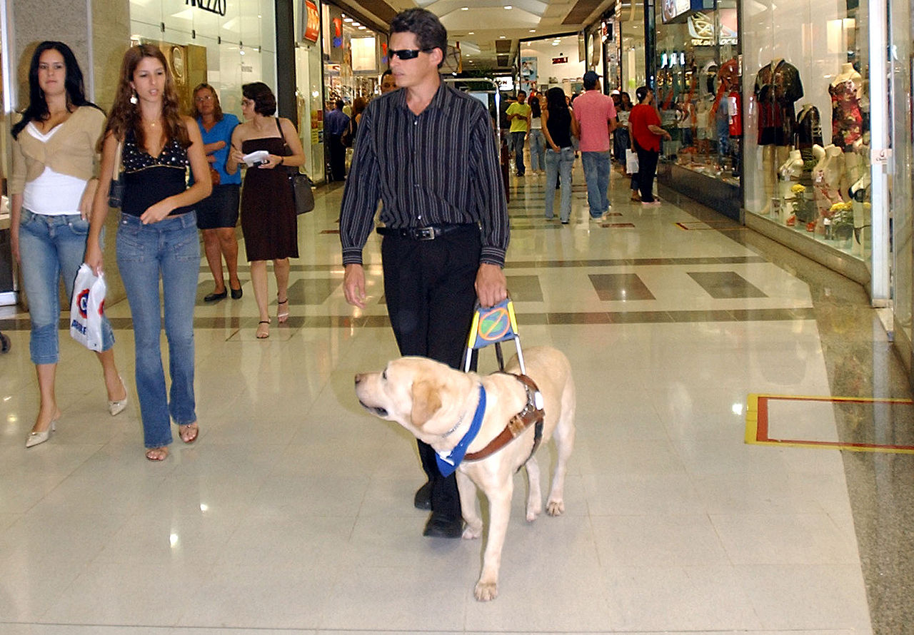
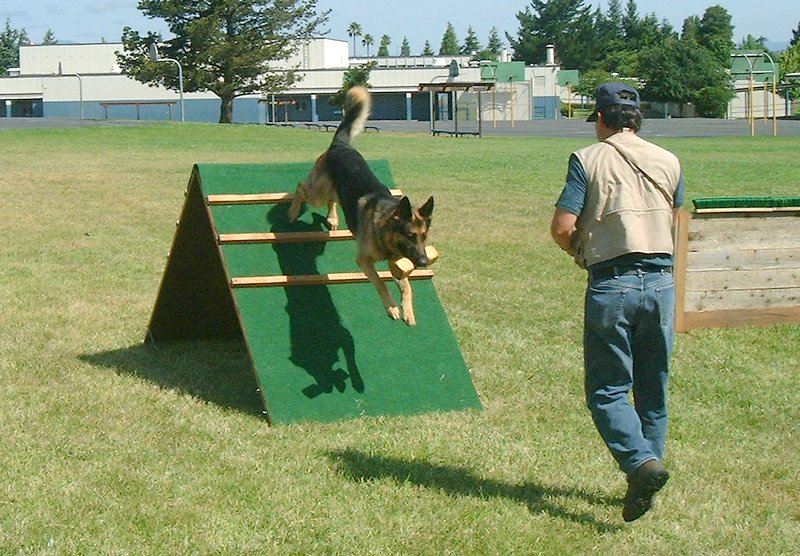

The domestic dog (Canis lupus familiaris when considered a subspecies of the wolf or Canis familiaris when considered a distinct species) is a member of the genus Canis (canines), which forms part of the wolf-like canids,and is the most widely abundant terrestrial carnivore.The dog and the extant gray wolf are sister taxa as modern wolves are not closely related to the wolves that were first domesticated,which implies that the direct ancestor of the dog is extinct. The dog was the first species to be domesticated and has been selectively bred over millennia for various behaviors, sensory capabilities, and physical attributes. Their long association with humans has led dogs to be uniquely attuned to human behavior and they are able to thrive on a starch-rich diet that would be inadequate for other canid species.Dogs vary widely in shape, size and colors. They perform many roles for humans, such as hunting, herding, pulling loads, protection, assisting police and military, companionship and, more recently, aiding disabled people and therapeutic roles. This influence on human society has given them the sobriquet of "man's best friend".
The origin of the domestic dog includes the dog's evolutionary divergence from the wolf, its domestication, and its development into dog types and dog breeds. The dog is a member of the genus Canis, which forms part of the wolf-like canids, and was the first species and the only large carnivore to have been domesticated.The dog and the extant gray wolf are sister taxa, as modern wolves are not closely related to the population of wolves that was first domesticated. The genetic divergence between dogs and wolves occurred between 40,000–20,000 years ago, just before or during the Last Glacial Maximum.This timespan represents the upper time-limit for the commencement of domestication because it is the time of divergence and not the time of domestication, which occurred later.The domestication of animals commenced over 15,000 years ago, beginning with the grey wolf (Canis lupus) by nomadic hunter-gatherers.The archaeological record and genetic analysis show the remains of the Bonn–Oberkassel dog buried beside humans 14,200 years ago to be the first undisputed dog, with disputed remains occurring 36,000 years ago.It was not until 11,000 years ago that people living in the Near East entered into relationships with wild populations of aurochs, boar, sheep, and goats. Where the domestication of the dog took place remains debated, with the most plausible proposals spanning Western Europe,Central Asia and East Asia. This has been made more complicated by the recent proposal that an initial wolf population split into East and West Eurasian groups. These two groups, before going extinct, were domesticated independently into two distinct dog populations between 14,000 and 6,400 years ago. The Western Eurasian dog population was gradually and partially replaced by East Asian dogs introduced by humans at least 6,400 years ago.This proposal is also debated.
There is some information about dog biology on this link
Dogs have been described as carnivores or omnivores.Compared to wolves, dogs have genes involved in starch digestion that contribute to an increased ability to thrive on a starch-rich diet.Based on metabolism and nutrition, many consider the dog to be an omnivore. However, the dog is not simply an omnivore. More like the cat and less like other omnivores, the dog can only produce bile acid with taurine, and it cannot produce vitamin D, which it obtains from animal flesh. Also more like the cat, the dog requires arginine to maintain its nitrogen balance. These nutritional requirements place the dog part-way between carnivores and omnivores.
Wolves, and their dog descendants, likely derived significant benefits from living in human camps – more safety, more reliable food, lesser caloric needs, and more chance to breed.They would have benefited from humans' upright gait that gives them larger range over which to see potential predators and prey, as well as better color vision that, at least by day, gives humans better visual discrimination.Camp dogs would also have benefited from human tool use, as in bringing down larger prey and controlling fire for a range of purposes.
It is estimated that three-quarters of the world's dog population lives in the developing world as feral, village, or community dogs, with pet dogs uncommon. The latest study using magnetic resonance imaging (MRI) comparing humans and dogs showed that dogs have the same response to voices and use the same parts of the brain as humans do. This gives dogs the ability to recognize emotional human sounds, making them friendly social pets to humans.
Dogs have lived and worked with humans in many roles. In addition to dogs' role as companion animals, dogs have been bred for herding livestock (collies, sheepdogs),hunting (hounds, pointers),and rodent control (terriers).Other types of working dogs include search and rescue dogs, detection dogs trained to detect illicit drugs or chemical weapons;guard dogs; dogs who assist fishermen with the use of nets; and dogs that pull loads.In 1957, the dog Laika became the first animal to be launched into Earth orbit, aboard the Soviets' Sputnik 2; she died during the flight.Various kinds of service dogs and assistance dogs, including guide dogs, hearing dogs, mobility assistance dogs, and psychiatric service dogs provide assistance to individuals with disabilities.Some dogs owned by epileptics have been shown to alert their handler when the handler shows signs of an impending seizure, sometimes well in advance of onset, allowing the guardian to seek safety, medication, or medical care.
People often enter their dogs in competitions such as breed-conformation shows or sports, including racing, sledding and agility competitions. In conformation shows, also referred to as breed shows, a judge familiar with the specific dog breed evaluates individual purebred dogs for conformity with their established breed type as described in the breed standard. As the breed standard only deals with the externally observable qualities of the dog (such as appearance, movement, and temperament), separately tested qualities (such as ability or health) are not part of the judging in conformation shows.
The entire contents of this page have been lifted from Wikipedia's page on Dog.
Return to the top of the page.